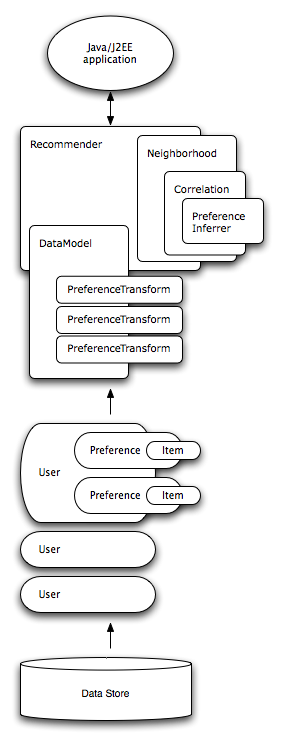

|
Taste Collaborative Filtering for Java |
Overview
Taste is a flexible, fast collaborative filtering engine for Java. The engine takes users' preferences for items ("tastes") and returns estimated preferences for other items. For example, a site that sells books or CDs could easily use Taste to figure out, from past purchase data, which CDs a customer might be interested in listening to.
Taste provides a rich set of components from which you can construct a customized recommender system from a selection of algorithms. Taste is designed to be enterprise-ready; it's designed for performance, scalability and flexibility. It supports a standard EJB (Enterprise Java Beans) interface for J2EE-based applications, but Taste is not just for Java; it can be run as an external server which exposes recommendation logic to your application via web services and HTTP.
Top-level packages define the Taste interfaces to these key abstractions:
Subpackages of comp.planetj.taste.impl hold implementations of these interfaces.
These are the pieces from which you will build your own recommendation engine. That's it!
For the academically inclined, Taste supports both memory-based and item-based
recommender systems. It does not currently support model-based recommenders.
Architecture

This diagram shows the relationship between various Taste components in a user-based recommender. An item-based recommender system is similar except that there are no PreferenceInferrers or Neighborhood algorithms involved.
Recommender
A Recommender is the core abstraction in Taste. Given a DataModel, it can produce
recommendations. Applications will most likely use the GenericUserBasedRecommender implementation
or GenericItemBasedRecommender, possibly decorated by
CachingRecommender.
DataModel
A DataModel is the interface to information about user preferences. An implementation might
draw this data from any source, but a database is the most likely source. Taste provides MySQLJDBCDataModel
to access preference data from a database via JDBC, though many applications will want to write their own.
Taste also provides a FileDataModel.
Along with DataModel, Taste uses the User, Item and
Preference abstractions to represent the users, items, and preferences for those items in the
recommendation engine. Custom DataModel implementations would return implementations of these
interfaces that are appropriate to the application - maybe an OnlineUser implementation
that represents an online store user, and a BookItem implementation representing a book.
PreferenceTransforms
A PreferenceTransform alters preference values in some way, possibly normalizing or
exaggerating them. These may be attached to a DataModel.
UserCorrelation, ItemCorrelation
A UserCorrelation defines a notion of similarity between two Users.
This is a crucial part of a recommendation engine. These are attached to a Neighborhood implementation.
ItemCorrelations are analagous, but find similarity between Items.
UserNeighborhood
In a user-based recommender, recommendations are produced by finding a "neighborhood" of
similar users near a given user. A UserNeighborhood defines a means of determining
that neighborhood — for example, nearest 10 users. Implementations typically need a
UserCorrelation to operate.
Requirements
Required
Optional
- Apache Ant 1.5 or later, if you want to build from source or build examples.
- Taste web applications require a Servlet 2.3+ container, such as Jakarta Tomcat. It may in fact work with older containers with slight modification.
- Taste EJB requires an EJB 2.x container. It may work with older EJB containers with slight changes to the deployment descriptor.
MySQLJDBCDataModelimplementation requires a MySQL 4.x database. Again, it may be made to work with earlier versions or other databases with slight changes.
Examples
User-based Recommender
User-based recommenders are the "original", conventional style of recommender system. They can produce good recommendations when tweaked properly; they are not necessarily the fastest recommender systems and are thus suitable for small data sets (roughly, less than a million ratings). We'll start with an example of this.
First, create a DataModel of some kind. Here, we'll use a simple on based
on data in a file:
DataModel model = new FileDataModel(new File("data.txt"));
It can be optionally instrumented with PreferenceTransforms:
model.addTransform(new ZScore()); model.addTransform(new CaseAmplification(1.5)); model.addTransform(new InverseUserFrequency(model));
We'll use the Pearson implementation of UserCorrelation as our user
correlation algorithm, and add an optional preference inference algorithm:
UserCorrelation userCorrelation = new PearsonCorrelation(model); userCorrelation.setPreferenceInferrer(new AveragingPreferenceInferrer());
Now we create a UserNeighborhood algorithm. Here we use nearest-10:
UserNeighborhood neighborhood = new NearestNUserNeighborhood(10, userCorrelation, model);
Now we can create our Recommender, and add a caching decorator:
Recommender recommender = new GenericUserBasedRecommender(model, neighborhood); Recommender cachingRecommender = new CachingRecommender(recommender);
Now we can get 10 recommendations for user ID "1234" — done!
List<RecommendedItem> recommendations = cachingRecommender.recommend("1234", 10);
Item-based Recommender
We could have created an item-based recommender instead. Item-based recommender base recommendation not on user similarity, but on item similarity. In theory these are about the same approach to the problem, just from different angles. However the similarity of two items is relatively fixed, more so than the similarity of two users. So, item-based recommenders can use pre-computed similarity values in the computations, which make them much faster. For large data sets, item-based recommenders are more appropriate.
Let's start over, again with a FileDataModel to start:
DataModel model = new FileDataModel(new File("data.txt"));
We'll also need an ItemCorrelation. We could use PearsonCorrelation,
which computes item similarity in realtime, but, this is generally too slow to be useful.
Instead, in a real application, you would feed a list of pre-computed correlations to
a GenericItemCorrelation:
// Construct the list of pre-compted correlations Collection<GenericItemCorrelation.ItemItemCorrelation> correlations = ... ItemCorrelation itemCorrelation = new GenericItemCorrelation(correlations);
Then we can finish as before to produce recommendations:
Recommender recommender =
new GenericItemBasedRecommender(model, itemCorrelation);
Recommender cachingRecommender = new CachingRecommender(recommender);
...
List<RecommendedItem> recommendations = cachingRecommender.recommend("1234", 10);
Demo
Want to see this thing run right now? Taste comes with an example web application which can recommend movies based on publicly-available research data available from the University of Minnesota's fantastic GroupLens project. (No endorsement or connection with the University of Minnesota or GroupLens is implied.)
Try this (bare-bones) demo online, which I keep running as much possible:
To build and run it yourself, follow the instructions below, which are written for Unix-like operating systems:
- Download the "1 Million MovieLens Dataset" from http://www.grouplens.org/.
- Unpack the archive and copy
movies.datandratings.dattosrc/example/com/planetj/taste/example/grouplensunder the Taste distribution directory. - Build the example web application by executing
ant build-grouplens-examplein the directory where you unpacked the Taste distribution. This producestaste.war. - Download and install Tomcat.
- Copy
taste.warto thewebappsdirectory under the Tomcat installation directory. - Increase the heap space that is given to Tomcat by setting the
JAVA_OPTSenvironment variable to-Xmx320m, to allow 320MB of heap space. Usingbash, one can do this with the commandexport JAVA_OPTS="-Xmx320m" - Start Tomcat. This is usually done by running
bin/startup.shfrom the Tomcat installation directory. You may get an error asking you to setJAVA_HOME; do so as above. - Get recommendations by accessing the web application in your browser:
http://localhost:8080/taste/RecommenderServlet?userID=1&howMany=10
This will produce a simple preference-item ID list which could be consumed by a client application. Get more useful human-readable output with thedebugparameter:
http://localhost:8080/taste/RecommenderServlet?userID=1&howMany=10&debug=true
Incidentally, Taste's web service interface may then be found at:
http://localhost:8080/taste/RecommenderService.jws
Its WSDL file will be here...
http://localhost:8080/taste/RecommenderService.jws?wsdl
... and you can even access it in your browser via a simple HTTP request:
http://localhost:8080/taste/RecommenderService.jws?method=recommend&userID=1&howMany=10
Integration with your application
Direct
You can create a Recommender, as shown above, wherever you like in your Java application, and use it. This
includes simple Java applications or GUI applications, server applications, and J2EE web applications.
Standalone server
Taste can also be run as an external server, which may be the only option for non-Java applications.
A Taste Recommender can be exposed as a web application via com.planetj.taste.web.RecommenderServlet,
and your application can then access recommendations via simple HTTP requests and response, or as a
full-fledged SOAP web service. See above, and see
the javadoc for details.
To deploy your Recommender as an external server:
- Create an implementation of
com.planetj.taste.recommender.Recommender. - Compile it and create a JAR file containing your implementation.
- Build a WAR file that will run your Recommender as a web application:
ant -Dmy-recommender.jar=yourJARfile.jar -Dmy-recommender-class=com.foo.YourRecommender build-taste-server - Follow from the "Install Tomcat" step above under Demo.
EJB
Taste provides a stateless session EJB interface to a Recommender. Deploying Taste as an EJB
is similar:
- Create an implementation of
com.planetj.taste.recommender.Recommender. See the example above, or seesrc/example/com/acme/AcmeRecommender. - Create a JAR file containing your implementation.
- Build an EJB JAR file containing your Recommender:
ant -Dmy-recommender.jar=yourJARfile.jar -Dmy-recommender-class=com.foo.YourRecommender build-taste-ejb - Install, for example, JBoss 4
- Copy the file
taste-ejb.jarto JBoss's deployment directory. - Start JBoss.
Useful Links
How will you decide which algorithms to use? The right answer depends on the nature of your data, and on your speed and memory constraints. Here are some links to good background reading on these algorithms, and useful comparisons of these algorithms:
J.S. Breese, D. Heckerman and C. Kadie, "Empirical Analysis of Predictive Algorithms for Collaborative Filtering," in Proceedings of the Fourteenth Conference on Uncertainity in Artificial Intelligence (UAI 1998), 1998.
B. Sarwar, G. Karypis, J. Konstan and J. Riedl, "Item-based collaborative filtering recommendation algorithms," in Proceedings of the Tenth International Conference on the World Wide Web (WWW 10), pp. 285-295, 2001.
P. Resnick, N. Iacovou, M. Suchak, P. Bergstrom and J. Riedl, "GroupLens: an open architecture for collaborative filtering of netnews," in Proceedings of the 1994 ACM conference on Computer Supported Cooperative Work (CSCW 1994), pp. 175-186, 1994.
J.L. Herlocker, J.A. Konstan, A. Borchers and J. Riedl, "An algorithmic framework for performing collaborative filtering," in Proceedings of the 22nd annual international ACM SIGIR Conference on Research and Development in Information Retrieval (SIGIR 99), pp. 230-237, 1999.
Clifford Lyon, "Movie Recommender," CSCI E-280 final project, Harvard University, 2004.
These links will take you to all the collaborative filtering reading you could ever want!
Need Services?
Taste is free, open-source software. As we develop it, we're also gearing up to offer professional services to organizations that want help integrating Taste into their applications. Why not get assistance straight from the developers? Contact us at SourceForge to inquire.
About...
Taste, ©2005 and onwards, Sean Owen. Taste is provided as-is with no warranty. Comments, bug reports, suggestions, patches, and all other input are most welcome. Get in touch at the Taste project page on SourceForge.